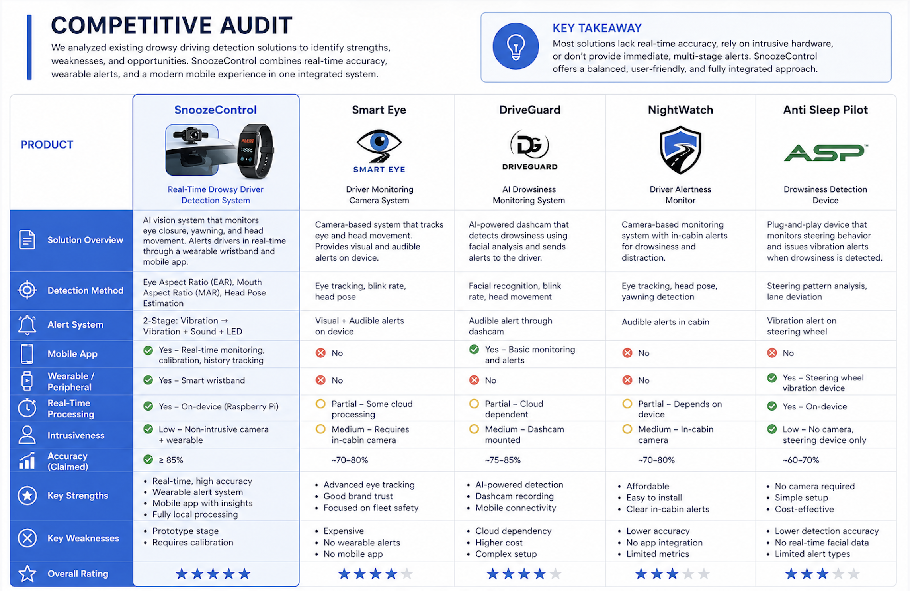
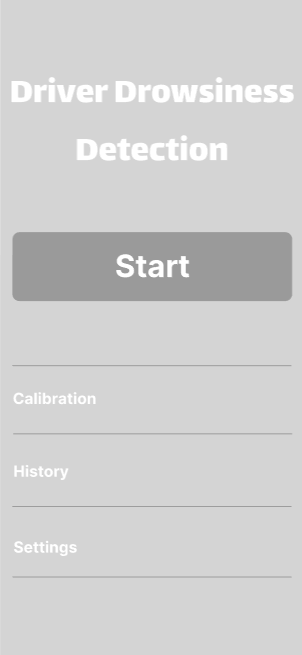
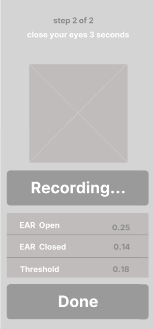
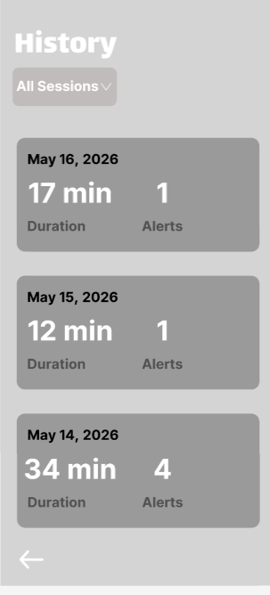
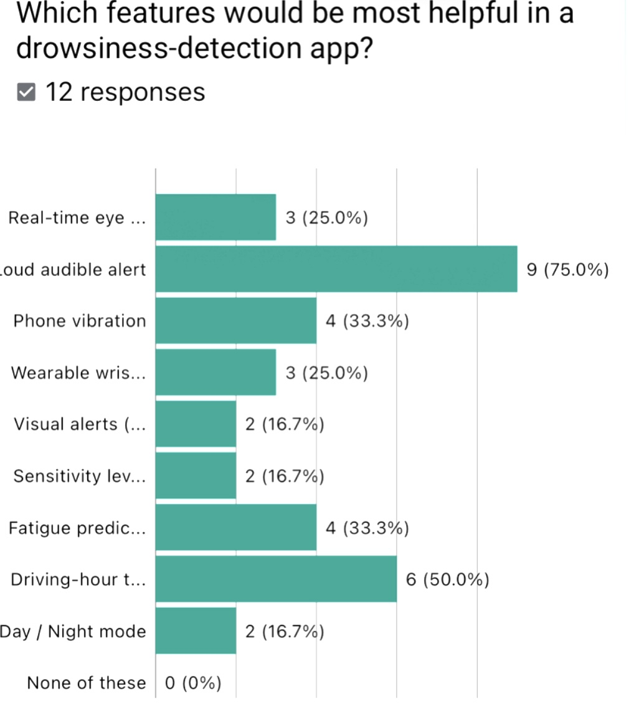
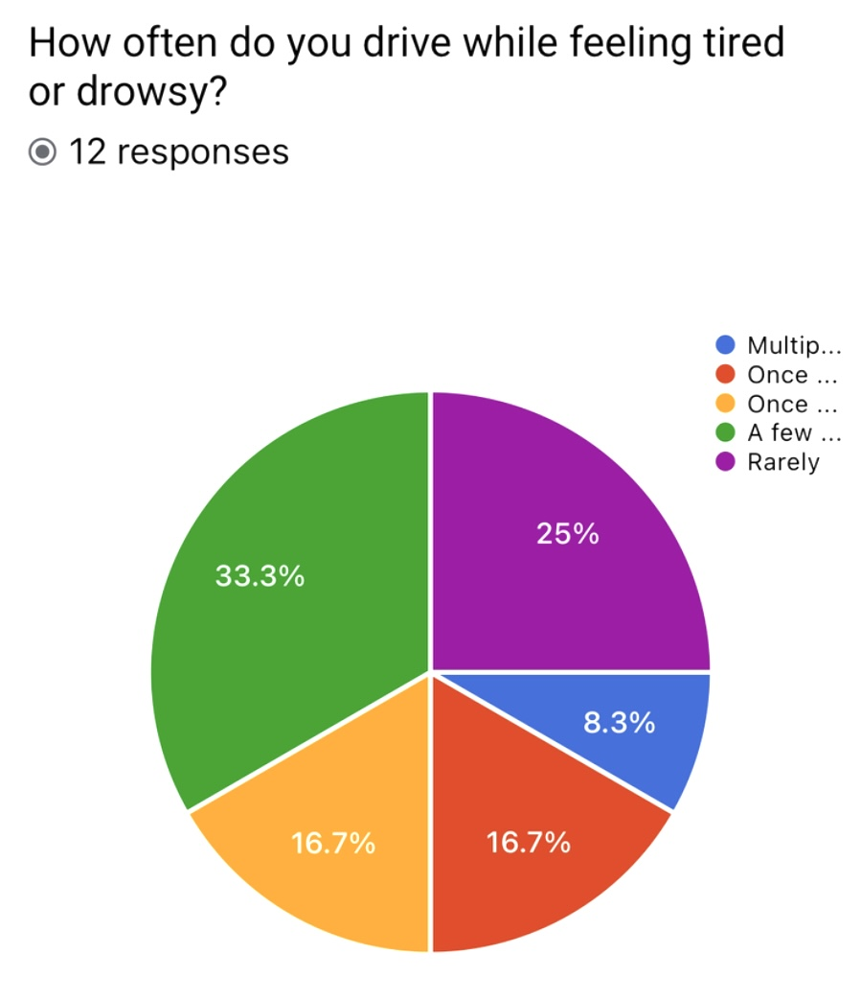
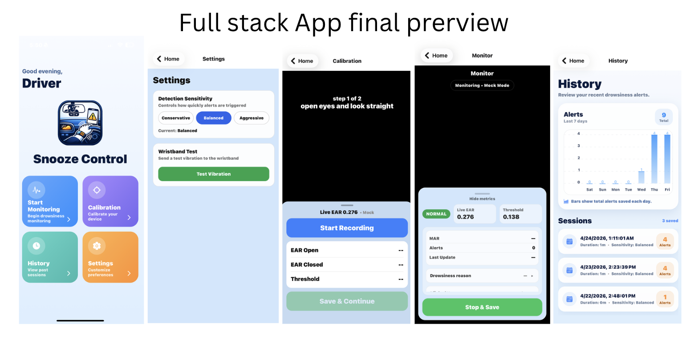
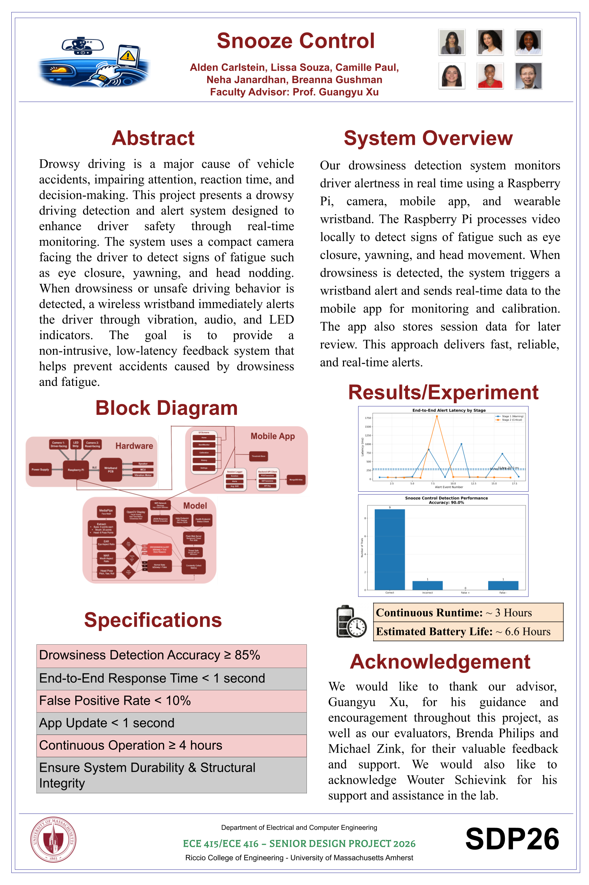

A safety-critical mobile interface for real-time drowsiness detection, multi-modal alerting, and fatigue pattern insights — built end-to-end from research through shipped product.
Explore the prototypes and project files
SnoozeControl is my Senior Design Project — I joined as an engineer and took on the UX/UI work independently, then built and shipped the full-stack implementation of my own designs. Teammates handled hardware integration and backend ML pipeline.
Drowsy driving contributes to an estimated 91,000 crashes annually in the United States. Yet consumer-facing solutions are limited to expensive aftermarket hardware or generic wellness apps that rely on self-reporting rather than objective detection.
Drivers need real-time intervention during drowsiness episodes, but existing solutions either don't detect drowsiness accurately, require too much user interaction, or fail to deliver alerts that actually wake severely tired drivers.
Before designing, I analyzed four existing drowsy driving detection products — Smart Eye, DriveGuard, NightWatch, and Anti Sleep Pilot — to identify gaps in the market and validate our design direction.

Most solutions lack real-time accuracy, rely on intrusive hardware, or don't provide immediate multi-stage alerts. None combine a mobile app with wearable alerts and fully local processing. That gap became SnoozeControl's design mandate.
I conducted a mixed-methods pilot study with 12 licensed drivers, supplemented by academic literature review and an expert consultation with Dr. Shannon Roberts, a transportation safety researcher at UMass Amherst.
of participants have driven while drowsy, yet only 8.3% regularly pull over to rest.
prioritized loud audible alerts, but wanted them sustained — not just brief beeps.
rated common coping strategies (caffeine, windows, music) as only "somewhat effective" or worse.
expressed skepticism about camera monitoring due to privacy and liability concerns.
| Research Finding | Design Decision |
|---|---|
| Audio should "play for extended period vs. just beeps" | Sustained 10–15 second alarm loops with escalating volume, requiring deliberate dismissal |
| Multi-modal alerts proven most effective (Dr. Roberts + academic research) | 2-stage wearable alert: Stage 1 vibration → Stage 2 vibration + sound + LED |
| 83.3% feel drowsy late at night; 58.3% on long highway drives | Adjustable sensitivity settings (Conservative / Balanced / Aggressive) for different contexts |
| Only 8.3% pull over; coping strategies fail | Session history surfaces fatigue patterns so drivers can recognize personal risk windows |
| Privacy concern for 33%; fear of unreliability | Zero cloud dependency — all processing happens locally on the Raspberry Pi |
The original plan was a trained ML classifier for drowsiness detection. During development, we pivoted to a threshold-based rule algorithm — which proved faster, more transparent, and easier to calibrate per user without needing a labeled training dataset.
Trained ML model classifying facial video into alert/drowsy states. Required labeled data, training pipeline, and a model that couldn't adapt to individual faces without retraining.
Rule-based algorithm using EAR, MAR, and Head Pose thresholds. Users calibrate their own baseline before each session, making detection personalized and explainable.
Switching from a black-box ML model to a transparent algorithm created a UX opportunity: the calibration flow became genuinely meaningful. Users now set their own baseline EAR and MAR values, which made the "personalized detection" value prop concrete and trustworthy — not just marketing language.
| Stage | Alert Type | Trigger |
|---|---|---|
| Stage 1 | Wristband vibration only | First drowsiness signal detected |
| Stage 2 | Vibration + Sound + LED | Continued drowsiness after Stage 1 |
All usability testing was conducted on low-fidelity prototypes to validate flow clarity and minimize cognitive load before investing in visual polish.



To communicate research insights clearly, I visualized the most important patterns from the pilot survey.


I tested three core flows with senior engineering faculty — all licensed drivers — using low-fidelity prototypes with zero instruction or guidance.
All three participants completed each task in 3–5 seconds with zero mistakes. One evaluator noted: "The UI is very simple and feels feasible for a real application."
All evaluators expected trend data, not just a session log. Response: added interactive bar charts, total alert counts, and tap-to-expand session breakdowns showing duration and sensitivity setting.
Technical metric labels were meaningless to non-engineers. Response: added a "Hide metrics" toggle so advanced data is opt-in, not forced on every driver.
After validating flows in lo-fi, I designed the high-fidelity interface in Figma and implemented the complete React Native frontend — wired to a Flask API running on the Raspberry Pi for real-time EAR/MAR data and session storage.

The full system runs end-to-end without cloud dependency. The Raspberry Pi serves as the central processing unit — running the computer vision pipeline, Flask API, and BLE communication with the wristband simultaneously.

| Step | What Happens |
|---|---|
| 1. Capture | Camera captures driver's face at the start of each monitoring session |
| 2. Process | Raspberry Pi runs EAR/MAR/Head Pose algorithm locally — no cloud required |
| 3. Alert | Drowsiness detected → wristband triggered via BLE (Stage 1: vibration; Stage 2: vibration + sound + LED) |
| 4. Sync | Real-time metrics and session data sent to mobile app via Flask API over local network |
Switching from ML to a threshold algorithm wasn't a setback — it made calibration more meaningful and gave users genuine ownership of their detection settings.
Faculty testing caught structural issues before I invested in visual polish, saving significant time and redirecting effort toward the history screen redesign.
Designing for drivers means every extra tap or confusing label carries real safety consequences. Cognitive load is a safety concern, not just a UX preference.
Building a secure, local-only system isn't enough — users need transparency built into the interface itself through onboarding and clear labeling.
SnoozeControl shows that effective UX isn't just about what users say they want — it's about understanding what research shows actually works, then making it simple enough to use at 70 mph. When the algorithm changed, the design had to earn that change. It did.